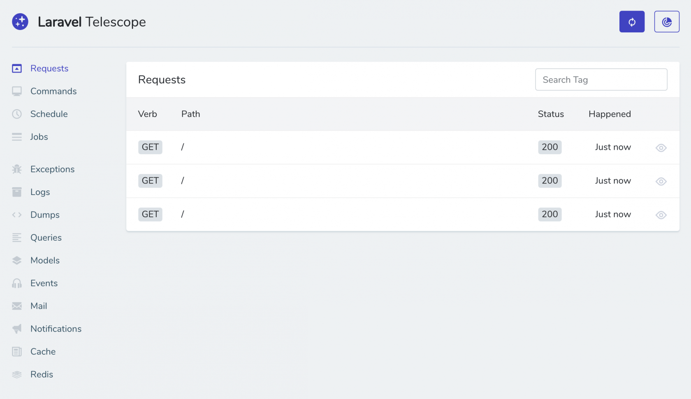

Laravel Telescope
Introduction
Laravel Telescope is an elegant debug assistant for the Laravel framework. Telescope provides insight into the requests coming into your application, exceptions, log entries, database queries, queued jobs, mail, notifications, cache operations, scheduled tasks, variable dumps and more. Telescope makes a wonderful companion to your local Laravel development environment.

Installation
You may use Composer to install Telescope into your Laravel project:
composer require laravel/telescopeAfter installing Telescope, publish its assets using the telescope:install Artisan command. After installing Telescope, you should also run the migrate command:
php artisan telescope:install
php artisan migrateUpdating Telescope
When updating Telescope, you should re-publish Telescope's assets:
php artisan telescope:publishInstalling Only In Specific Environments
If you plan to only use Telescope to assist your local development. You may install Telescope using the --dev flag:
composer require laravel/telescope --devAfter running telescope:install, you should remove the TelescopeServiceProvider service provider registration from your app configuration file. Instead, manually register the service provider in the register method of your AppServiceProvider:
use Laravel\Telescope\TelescopeServiceProvider;
/**
* Register any application services.
*
* @return void
*/
public function register()
{
if ($this->app->isLocal()) {
$this->app->register(TelescopeServiceProvider::class);
}
}Migration Customization
If you are not going to use Telescope's default migrations, you should call the Telescope::ignoreMigrations method in the register method of your AppServiceProvider. You may export the default migrations using the php artisan vendor:publish --tag=telescope-migrations command.
Configuration
After publishing Telescope's assets, its primary configuration file will be located at config/telescope.php. This configuration file allows you to configure your watcher options and each configuration option includes a description of its purpose, so be sure to thoroughly explore this file.
If desired, you may disable Telescope's data collection entirely using the enabled configuration option:
'enabled' => env('TELESCOPE_ENABLED', true),Data Pruning
Without pruning, the telescope_entries table can accumulate records very quickly. To mitigate this, you should schedule the telescope:prune Artisan command to run daily:
$schedule->command('telescope:prune')->daily();By default, all entries older than 24 hours will be pruned. You may use the hours option when calling the command to determine how long to retain Telescope data. For example, the following command will delete all records created over 48 hours ago:
$schedule->command('telescope:prune --hours=48')->daily();Dashboard Authorization
Telescope exposes a dashboard at /telescope. By default, you will only be able to access this dashboard in the local environment. Within your app/Providers/TelescopeServiceProvider.php file, there is a gate method. This authorization gate controls access to Telescope in non-local environments. You are free to modify this gate as needed to restrict access to your Telescope installation:
/**
* Register the Telescope gate.
*
* This gate determines who can access Telescope in non-local environments.
*
* @return void
*/
protected function gate()
{
Gate::define('viewTelescope', function ($user) {
return in_array($user->email, [
'taylor@laravel.com',
]);
});
}Filtering
Entries
You may filter the data that is recorded by Telescope via the filter callback that is registered in your TelescopeServiceProvider. By default, this callback records all data in the local environment and exceptions, failed jobs, scheduled tasks, and data with monitored tags in all other environments:
/**
* Register any application services.
*
* @return void
*/
public function register()
{
$this->hideSensitiveRequestDetails();
Telescope::filter(function (IncomingEntry $entry) {
if ($this->app->isLocal()) {
return true;
}
return $entry->isReportableException() ||
$entry->isFailedJob() ||
$entry->isScheduledTask() ||
$entry->hasMonitoredTag();
});
}Batches
While the filter callback filters data for individual entries, you may use the filterBatch method to register a callback that filters all data for a given request or console command. If the callback returns true, all of the entries are recorded by Telescope:
use Illuminate\Support\Collection;
/**
* Register any application services.
*
* @return void
*/
public function register()
{
$this->hideSensitiveRequestDetails();
Telescope::filterBatch(function (Collection $entries) {
if ($this->app->isLocal()) {
return true;
}
return $entries->contains(function ($entry) {
return $entry->isReportableException() ||
$entry->isFailedJob() ||
$entry->isScheduledTask() ||
$entry->hasMonitoredTag();
});
});
}Available Watchers
Telescope watchers gather application data when a request or console command is executed. You may customize the list of watchers that you would like to enable within your config/telescope.php configuration file:
'watchers' => [
Watchers\CacheWatcher::class => true,
Watchers\CommandWatcher::class => true,
...
],Some watchers also allow you to provide additional customization options:
'watchers' => [
Watchers\QueryWatcher::class => [
'enabled' => env('TELESCOPE_QUERY_WATCHER', true),
'slow' => 100,
],
...
],Cache Watcher
The cache watcher records data when a cache key is hit, missed, updated and forgotten.
Command Watcher
The command watcher records the arguments, options, exit code, and output whenever an Artisan command is executed. If you would like to exclude certain commands from being recorded by the watcher, you may specify the command in the ignore option in your config/telescope.php file:
'watchers' => [
Watchers\CommandWatcher::class => [
'enabled' => env('TELESCOPE_COMMAND_WATCHER', true),
'ignore' => ['key:generate'],
],
...
],Dump Watcher
The dump watcher records and displays your variable dumps in Telescope. When using Laravel, variables may be dumped using the global dump function. The dump watcher tab must be open in a browser for the recording to occur, otherwise the dumps will be ignored by the watcher.
Event Watcher
The event watcher records the payload, listeners, and broadcast data for any events dispatched by your application. The Laravel framework's internal events are ignored by the Event watcher.
Exception Watcher
The exception watcher records the data and stack trace for any reportable Exceptions that are thrown by your application.
Gate Watcher
The gate watcher records the data and result of gate and policy checks by your application. If you would like to exclude certain abilities from being recorded by the watcher, you may specify those in the ignore_abilities option in your config/telescope.php file:
'watchers' => [
Watchers\GateWatcher::class => [
'enabled' => env('TELESCOPE_GATE_WATCHER', true),
'ignore_abilities' => ['viewNova'],
],
...
],Job Watcher
The job watcher records the data and status of any jobs dispatched by your application.
Log Watcher
The log watcher records the log data for any logs written by your application.
Mail Watcher
The mail watcher allows you to view an in-browser preview of the emails along with their associated data. You may also download the email as an .eml file.
Model Watcher
The model watcher records model changes whenever an Eloquent created, updated, restored, or deleted event is dispatched. You may specify which model events should be recorded via the watcher's events option:
'watchers' => [
Watchers\ModelWatcher::class => [
'enabled' => env('TELESCOPE_MODEL_WATCHER', true),
'events' => ['eloquent.created*', 'eloquent.updated*'],
],
...
],Notification Watcher
The notification watcher records all notifications sent by your application. If the notification triggers an email and you have the mail watcher enabled, the email will also be available for preview on the mail watcher screen.
Query Watcher
The query watcher records the raw SQL, bindings, and execution time for all queries that are executed by your application. The watcher also tags any queries slower than 100ms as slow. You may customize the slow query threshold using the watcher's slow option:
'watchers' => [
Watchers\QueryWatcher::class => [
'enabled' => env('TELESCOPE_QUERY_WATCHER', true),
'slow' => 50,
],
...
],Redis Watcher
{note} Redis events must be enabled for the Redis watcher to function. You may enable Redis events by calling
Redis::enableEvents()in thebootmethod of yourapp/Providers/AppServiceProvider.phpfile.
The Redis watcher records all Redis commands executed by your application. If you are using Redis for caching, cache commands will also be recorded by the Redis Watcher.
Request Watcher
The request watcher records the request, headers, session, and response data associated with any requests handled by the application. You may limit your response data via the size_limit (in KB) option:
'watchers' => [
Watchers\RequestWatcher::class => [
'enabled' => env('TELESCOPE_REQUEST_WATCHER', true),
'size_limit' => env('TELESCOPE_RESPONSE_SIZE_LIMIT', 64),
],
...
],Schedule Watcher
The schedule watcher records the command and output of any scheduled tasks run by your application.